Mimulus Genetic Mapping - A new approach with more molecular markers
Godoy, Marcos1; Araújo, Wellingson Assunção2.
1 Laboratory of Genetic Diversity and Breeding - Luiz de Queiroz College of Agriculture ESALQ / USP. 2 Genetics Laboratory Statistics - Luiz de Queiroz College of Agriculture ESALQ / USP.
Introduction
Most of the characteristics of interest are classified as quantitative, that is, they are influenced by several genes. Therefore the tools for mapping QTL are of great importance to understand the behavior of these characteristics. The genetic linkage maps are used to initiate the genetic architecture studies of the species, thus providing a basis for QTL mapping, isolation and identification of the genes involved in the phenotypic differentiation, as well as the contribution of each gene to the characteristic. The advent of molecular marker production techniques allows for a greater coverage of the genome, making possible a more comprehensive study of the quantitative characteristics, currently different types of molecular markers are found, which have greater ease of automation, lower cost and greater reliability. The increase in the number of markers is the main motivation of this work, in 2001 the paper: A Genetic Map in the Mimulus guttatus Species Complex Reveals Transmission Ratio Distortion due to Heterospecific Interactions, shows the construction of a genetic map of a F2 population obtained through the crossing between Mimulus guttatus and Mimus nasutus species. In this work, 174 markers were used, which demonstrated the formation of 14 binding groups. In order to increase the level of information about this population, the present work reconstructed the genetic map with a larger number of molecular markers.
Material and methods.
The plant material
The F2 population containing 287 individuals was constructed from the crossing of an inbred line of M. guttatus with one of M. nasutus, the F1 population generated was self-fertilized, thus forming the population of this study. Experiments to obtain populations were carried out in the Department of Biology of the University of Oregon USA, each step is described in detail in Fishman et al. (2001).
Construction of genetic maps
The link map was constructed using the package for the R Onemap environment (MARGARIDO et al, 2007) however the original data are in MAPMAKER format (LANDER et al., 1987). Initially for the import of the data to the Onemap was used the function read_mapmaker, after this the presence of redundant markers was verified. In order to observe the presence of markers that do not present Mendelian segregation a segregation test was made, adopting like null hypothesis the expected segregation for a F2 population, for each marker type (dominant and codominant). First, only the markers following the Mendelian segregation (348) were used and later some distortion markers were added to improve some binding groups (39). The two point test was performed initially to identify the binding between the markers, estimating the recombination fractions. Subsequently, the binding groups were formed with the recombination fraction of 0.5 and the LOD suggested by the program. The ordering strategy was based on the multipoint analysis using the markov chain, within the function try_sec the “force” and “safe” arguments were used as appropriate to each group, besides the removal of markers based on heatmaps and maximum likelihood values. Finally, after all the manipulations in each group, the map was designed using the mapChart software.
Results
Access the complete results here.
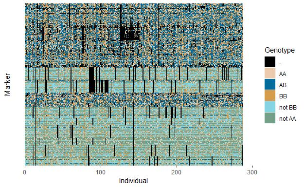 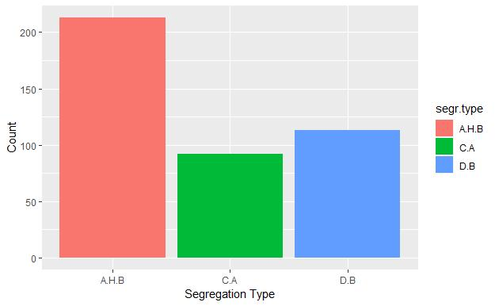 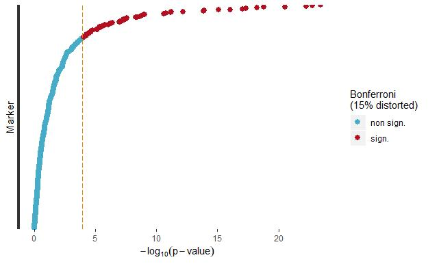
Heatmaps
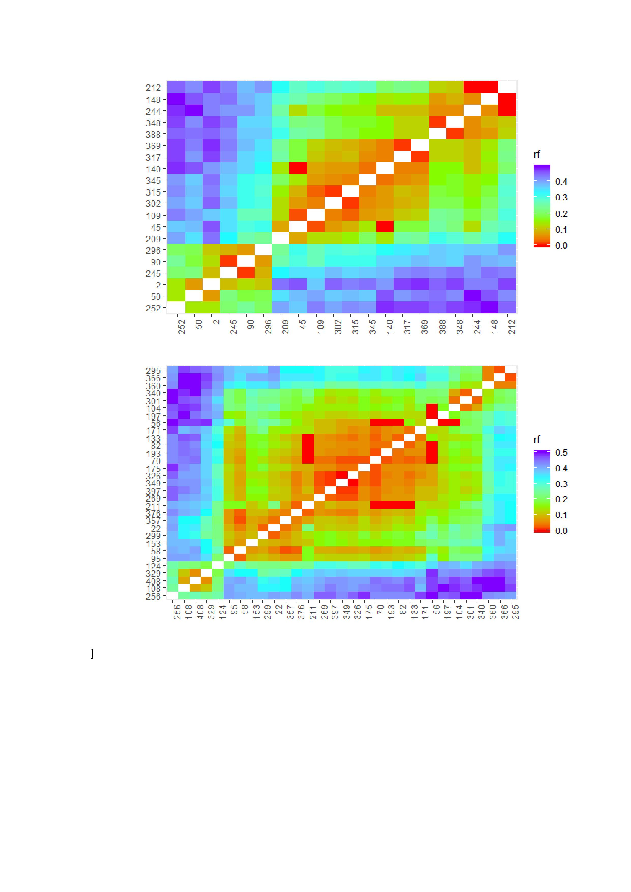 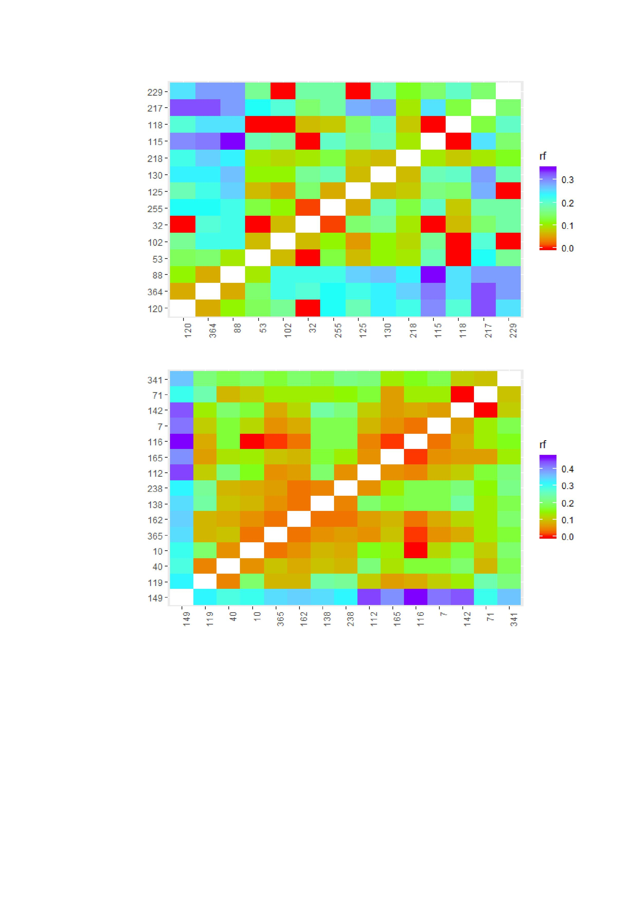 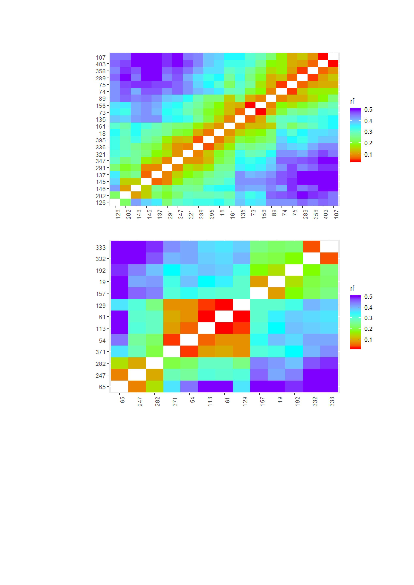 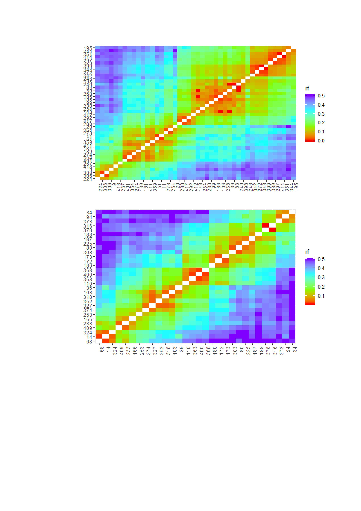 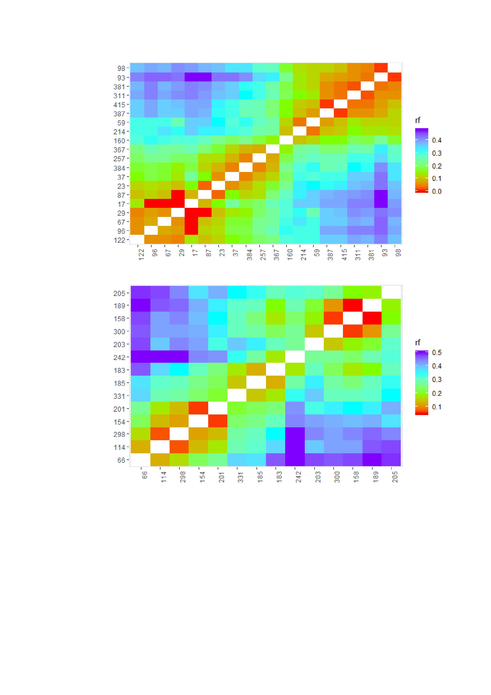 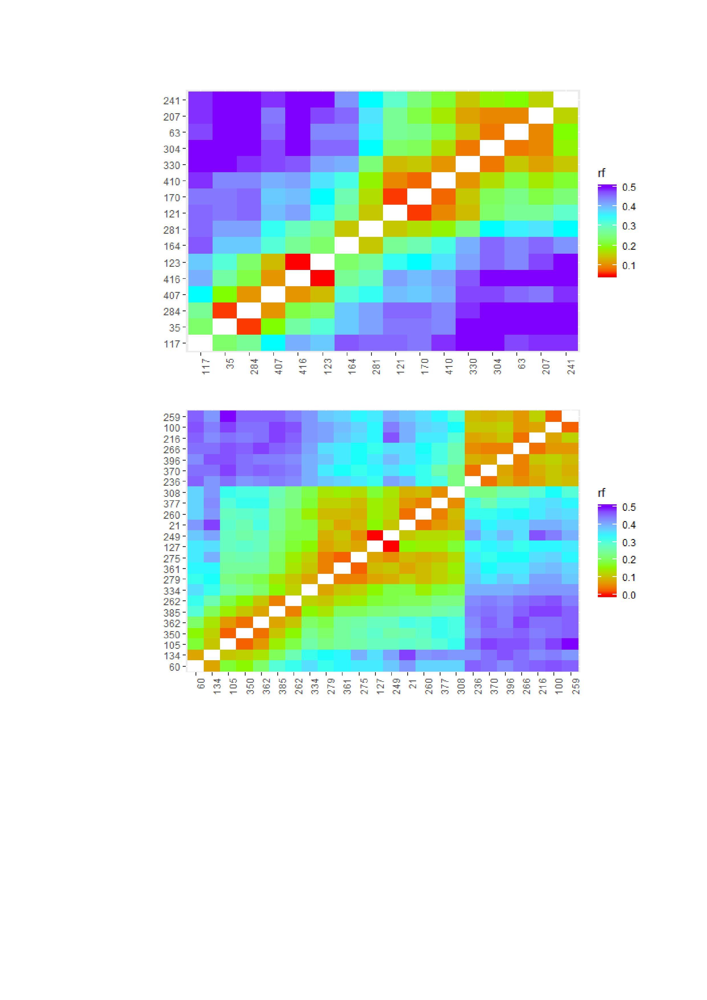 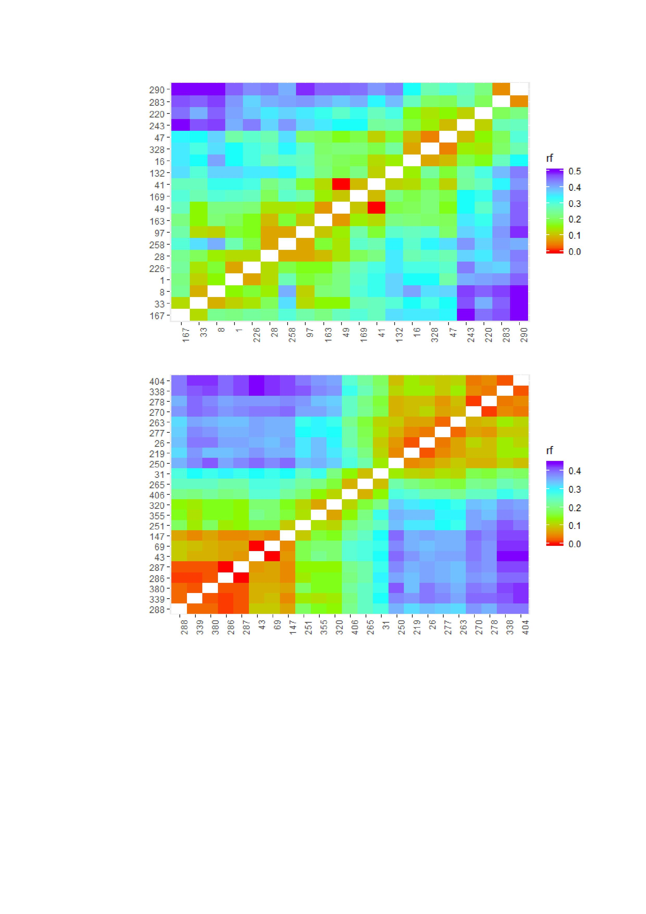
Map obtained by Mapchart
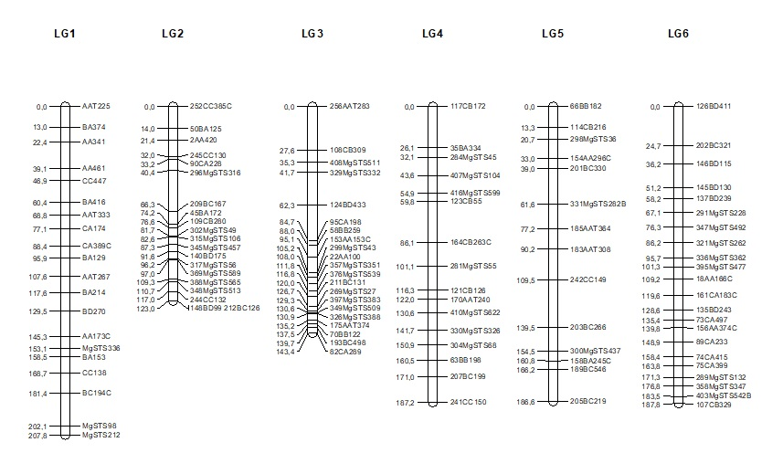 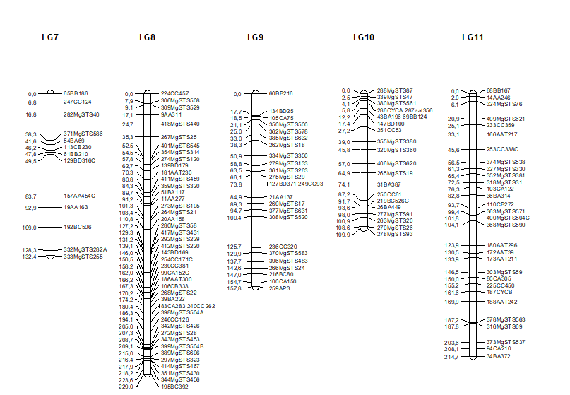
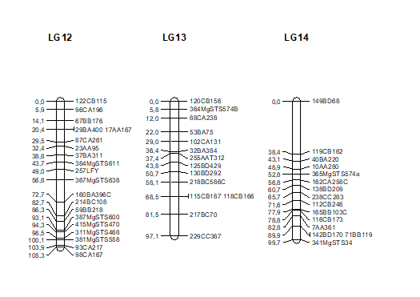
Watch a tutorial video
For more details watch the video
Bibliographic references
Fishman, L., A. J. Kelly, E. Morgan and J. H. Wilis, 2001 A genetic map in the Mimulus guttatus species complex reveals transmission ratio distortion due to heterospecific interactions. Genetics 159: 1701-1716.
Margarido, G. R. A., A. P. Souza and A. A. F. Garcia, 2007 OneMap: software for genetic mapping in outcrossing species. Hereditas 144: 78-79.
R Core Team (2014). R: A Language and Environment for Statistical Computing. R Foundation for Statistical Computing, Vienna, Austria. URL http://www.R-project.org/.
Voorrips, R.E., 2002. MapChart: Software for the graphical presentation of linkage maps and QTLs. The Journal of Heredity 93 (1): 77-78.